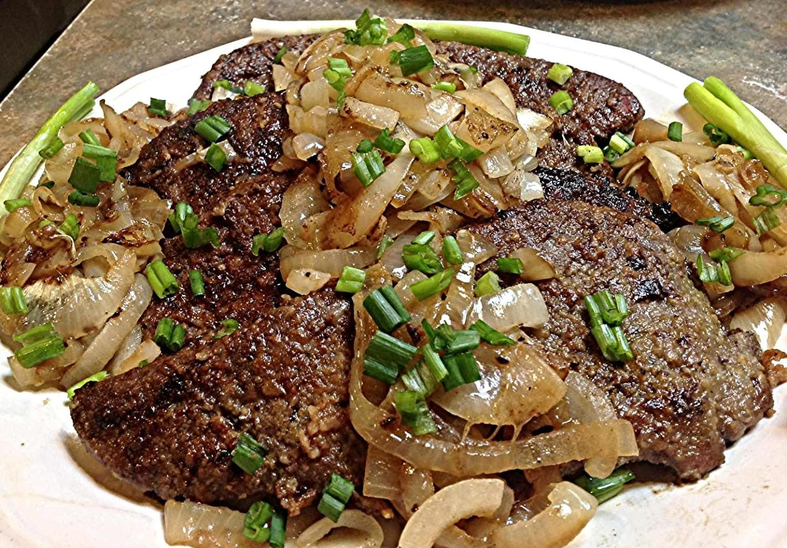

Beef Liver

Description
This liver and onions recipe will turn liver haters into converts! It's very simple to make but the three things that will set your liver above all others are:
1) soak in milk, 2) turn the liver as little as possible when cooking, and 3) don't overcook.
Ingredients
- 2 pounds sliced beef liver
- 1 ½ cups milk, or as needed
- ¼ cup butter, divided
- 2 large Vidalia onions, sliced into rings
- 2 cups all-purpose flour, or as needed
- salt and pepper to taste
Steps
-
Gently rinse liver slices under cold water and pat dry with paper towels. Place in a shallow dish; pour in enough milk to cover.
Let stand while preparing onions, or set aside for longer if you have time. Soaking will remove any bitterness.
-
Melt 2 tablespoons of butter in a large skillet over medium heat. Add onion rings; cook and stir in butter until
tender and soft, about 3 to 5 minutes. Transfer onions into a bowl and set the skillet aside.
-
Place flour on a plate; season with salt and pepper. Drain milk from liver and coat liver slices in flour mixture.
-
Melt remaining 2 tablespoons of butter in the same skillet; increase heat to medium-high and fry coated liver slices until lightly browned, about 3 to 4 minutes on each side.
Return onions to the skillet and reduce heat to medium; continue to cook until onions are heated through and liver is slightly pink inside, or longer to suit your taste.